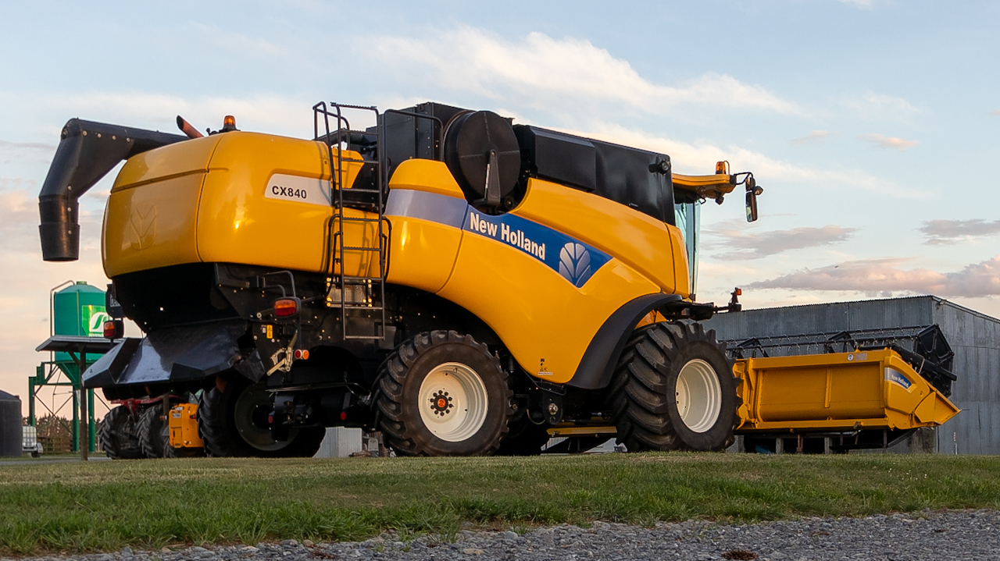

Our Fleet
Delve into the technological backbone of Anner Park Farm by exploring our meticulously maintained fleet of machines. Learn about the cutting-edge equipment that enables us to uphold the highest standards in farming practices.
-

New Holland CX840
The New Holland CX840 excels in harvesting with advanced technology, high capacity, and versatile crop handling. A standout for modern agricultural needs.
-
New Holland CX760
The New Holland CX760 redefined harvesting efficiency with cutting-edge tech, impressive capacity, and adaptable crop handling. A beacon of innovation for modern agriculture.
-
Massey Ferguson MF 7618
The Massey Ferguson MF 7618 boasts a robust engine, advanced transmission, and versatile capabilities, making it a powerful, efficient, and adaptable choice for farmers' diverse agricultural needs.
-
Massey Ferguson MF 7495
The Massey Ferguson MF 7495, with its powerful engine, advanced transmission, and versatile design, offers farmers a reliable and efficient solution for diverse agricultural tasks.
-

Massey Ferguson MF 6160
The Massey Ferguson MF 6160 is appreciated for its reliable performance, compact design, and versatility, making it a well-regarded tractor for various agricultural tasks.
-

JCB 532-70 AGRI
The JCB 532-70 AGRI telehandler is valued for its lifting capacity, performance, and maneuverability, making it a popular choice for handling diverse agricultural tasks with ease.
-

Kawasaki Mule
The Kawasaki Mule is renowned for its exceptional durability, versatility, and off-road capability, making it a reliable and robust utility vehicle for a wide range of applications.